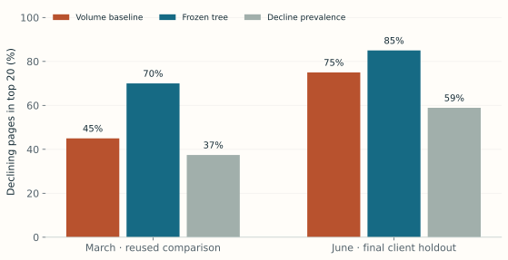
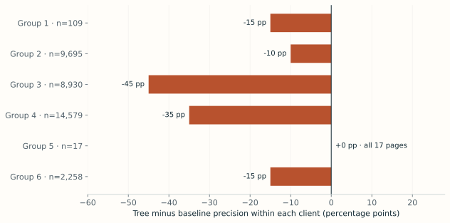
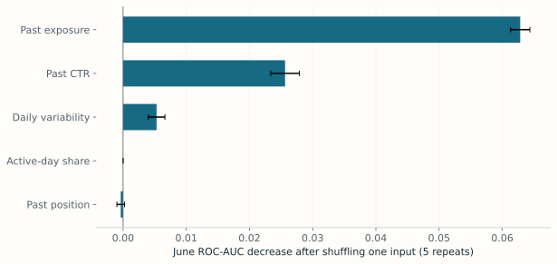

Abstract
Can a small search-data model help an editor choose which pages deserve inspection for a possible content refresh? We studied pinned March and June 2026 FlyRank warehouse partitions, training on 14,137 pages from 24 clients and reserving later outcomes from untrained clients. A frozen depth-three decision tree used five past-window features and competed with a volume-only baseline under the same eligibility rules and decline proxy. On 35,588 June pages across 6 held-out clients, the tree found 17 declines in its top 20 versus 15 for the baseline, but it performed worse within all five clients large enough for a top-20 selection. The result supports a historical inspection pilot with explicit guardrails, while broad adoption and any claim of refresh benefit remain unsupported.
An editor has twenty review slots
A content editor has thousands of visible pages and enough time to inspect only twenty. A useful queue should improve the use of those slots: identify outdated facts, missing coverage or an intent mismatch, while recognizing that technical problems and seasonal demand may call for a different response.
This is Refresh / Content Opportunity Scoring, the lane locked in Week 4. The output is a ranked inspection queue with reasons, not an automatic instruction to rewrite. A false positive wastes review time and may disturb successful content; a false negative delays attention. We do not have independent editorial judgments or measured refresh effects, so this study evaluates an observable traffic-decline proxy.
The question is therefore narrower than “does ML improve content?”: does a transparent model rank later-declining pages better than an exposure-first rule, and does that result hold within clients?
Two months, with the windows kept apart
The source is the gated FlyRank internship warehouse, release build v20260703, pinned to revision 50cbf7c3909d07be4d1b5906b4d09e882e5acbf2. We read only March and June partitions of fact_content_daily_performance. No starter-CSV observations were substituted.
| Measure | March | June |
|---|---|---|
| Source page-day rows | 9,841,378 | 11,694,072 |
| Exact duplicate rows removed | 0 | 6,390 |
| Past-eligible pages | 60,534 | 71,761 |
| Pages with complete labels | 57,624 | 64,818 |
One source row is a client–page–day; one scored row is a client–page at a decision date. Pages need at least 100 impressions and 14 valid past days. Availability is checked with gsc_data_available IS TRUE; unavailable or NULL measurements are not interpreted as zero traffic. Both windows need complete coverage to assign a label, but unknown outcomes do not remove pages from the decision-time queue.
The first June grain check found 6,390 identical extra rows and zero conflicting versions across all selected fields. The run stopped before model scoring. An auditable data-only amendment removes those copies; conflicting duplicates still cause failure. June has 11,687,682 page-days after cleaning.
We exclude client identities, domains, page URLs, private queries, GA4 measurements, mutable content metadata and the overlapping fixed-window query table. Hash IDs are used only for grouping and deterministic ties. The final-month _sample table was not used for development.
A small model and a frozen comparison
The baseline, volume_first_v1, ranks eligible pages by past impressions. Week 4 found mixed evidence for both volume and volatility, so it dropped a proposed volatility bonus and retained exposure as a simple review-priority policy.
The model is a decision tree with maximum depth 3, minimum leaf size 100 and seed 42. Its five features are defined below. Median imputation is fitted only on training clients. Daily position values below 1 are treated as missing: this corrects the anomaly identified in Week 4 without changing row eligibility.
| Input | Definition, using days 1–14 only |
|---|---|
| Daily exposure | Past impressions / 14 |
| CTR | 100 × past clicks / past impressions |
| Position | Impression-weighted mean of valid daily positions |
| Active-day share | Days with positive impressions / 14 |
| Daily variability | Population SD of daily impressions / daily mean |
The binary proxy is later_14d_impressions < 0.8 × past_14d_impressions. The model never receives future counts, the proxy label, client IDs or product flags. Report-date separation is verified; the two-day buffer is an availability assumption, not proof of historical ingestion time.
We retain Week 4’s client split: 14,137 March training pages from 24 clients, plus a previously inspected comparison set of 43,487 pages from 8 other clients. Five-fold client-grouped validation uses only training clients, with no hyperparameter search. The March comparison is explicitly reused, not advertised as fresh.
The specification was committed in 01a5c7b before the first June read. The primary final cohort contains June pages from the original March holdout clients; six of those clients meet June eligibility. June was not used to refit or tune. Precision@20 is primary; prevalence, ROC-AUC, average precision, client-specific rankings and a 500-resample paired client bootstrap provide context. Reproducibility reruns retain the same frozen choices.
The pooled gain does not survive the client check
On the primary June cohort, the model’s first 20 contain 17 declining pages (85%), versus 15 (75%) for the volume rule. That is two additional proxy-positive pages, with a cohort decline prevalence of 58.90%.

| Cohort | Method | P@20 | ROC-AUC | Avg. precision | Prevalence |
|---|---|---|---|---|---|
| March · reused comparison | Volume baseline | 45% | 0.532 | 0.398 | 37.44% |
| March · reused comparison | Frozen tree | 70% | 0.604 | 0.446 | 37.44% |
| June · primary final cohort | Volume baseline | 75% | 0.599 | 0.635 | 58.90% |
| June · primary final cohort | Frozen tree | 85% | 0.575 | 0.639 | 58.90% |
| June · all clients (secondary) | Volume baseline | 85% | 0.584 | 0.547 | 50.29% |
| June · all clients (secondary) | Frozen tree | 80% | 0.578 | 0.558 | 50.29% |
Other checks temper that headline. The model’s June ROC-AUC is 0.575, below the baseline’s 0.599. Its global top 20 cover only 2 clients, versus 4 for the baseline. The primary cohort contains 35,588 labeled pages, but these come from only 6 client groups.

No reliable overall win. The paired client-bootstrap interval for the pooled precision difference spans -60 to +20 percentage points. With only six clusters, this is a descriptive uncertainty check, not a significance claim. We would not promote the model broadly based on this result.
The all-client June cohort is secondary and mixes previously seen and unseen clients. There the model achieves 80% precision@20 versus 85% for the baseline, reinforcing that the result depends on the pool being ranked. No tuning follows this observation.

What the experiment cannot establish
- Decline is not refresh benefit. Neither editorial actionability nor traffic recovered after an edit was observed. Three of the model’s primary top 20 did not decline, and even a true decline can have a non-content cause.
- Client composition matters. A stronger global top 20 coexists with weaker within-client rankings and lower AUC. Client quotas or operational allocation policies would require a separately declared evaluation.
- Few independent groups. Tens of thousands of pages do not replace independent clients. The final six-client sample and wide bootstrap interval limit generalization.
- Coverage selects the labeled sample. Requiring later data can exclude disappearing pages or clients. Unknown outcomes are not treated as negative labels.
- Two snapshots are not a production replay. We do not know exact reporting arrival or later revisions, and one later month does not establish seasonal robustness. June recommendations are historical, not current September instructions.
- Coarse scores and imperfect measurements. The shallow tree produces tied leaf frequencies, not calibrated probabilities of editorial success. Position needed a documented quality repair. IDs resolve ties for reproducibility only.
- Review remains hypothetical. No page text, private query intent or technical configuration was inspected. Recommendations below are an inspection playbook, with low editorial confidence.
A ranked inspection playbook, with a stop before editing
The predeclared global metric selects the model for this historical June 17 illustration; the adverse client-level audit argues against broad deployment. The queue contains 39,396 past-eligible pages from the original held-out clients, including 3,808 with unknown later outcomes. The full pseudonymized queue stays local and is regenerated by code.
These ten public review slots retain their actual rank but omit page/client identifiers and raw measurements. An authorized editor can map them to the local CSV. Every slot calls for inspection; refreshing, rewriting, pruning or merging requires independent evidence. Similar leaf scores and reason codes are expected from a shallow tree and are a limitation of its resolution.
Inspect before refreshing
Ranked by the selected method; inspect intent, missing coverage and technical context.
Could be wrong if: The page already meets intent, or visibility loss has a technical or seasonal cause.
Leaf score 0.535 · Low editorial confidence
Inspect before refreshing
Ranked by the selected method; inspect intent, missing coverage and technical context.
Could be wrong if: The page already meets intent, or visibility loss has a technical or seasonal cause.
Leaf score 0.535 · Low editorial confidence
Inspect before refreshing
Ranked by the selected method; inspect intent, missing coverage and technical context.
Could be wrong if: The page already meets intent, or visibility loss has a technical or seasonal cause.
Leaf score 0.535 · Low editorial confidence
Inspect before refreshing
Ranked by the selected method; inspect intent, missing coverage and technical context.
Could be wrong if: The page already meets intent, or visibility loss has a technical or seasonal cause.
Leaf score 0.535 · Low editorial confidence
Inspect before refreshing
Ranked by the selected method; inspect intent, missing coverage and technical context.
Could be wrong if: The page already meets intent, or visibility loss has a technical or seasonal cause.
Leaf score 0.535 · Low editorial confidence
Inspect before refreshing
Ranked by the selected method; inspect intent, missing coverage and technical context.
Could be wrong if: The page already meets intent, or visibility loss has a technical or seasonal cause.
Leaf score 0.535 · Low editorial confidence
Inspect before refreshing
Ranked by the selected method; inspect intent, missing coverage and technical context.
Could be wrong if: The page already meets intent, or visibility loss has a technical or seasonal cause.
Leaf score 0.535 · Low editorial confidence
Inspect before refreshing
Ranked by the selected method; inspect intent, missing coverage and technical context.
Could be wrong if: The page already meets intent, or visibility loss has a technical or seasonal cause.
Leaf score 0.535 · Low editorial confidence
Inspect before refreshing
Ranked by the selected method; inspect intent, missing coverage and technical context.
Could be wrong if: The page already meets intent, or visibility loss has a technical or seasonal cause.
Leaf score 0.535 · Low editorial confidence
Inspect before refreshing
Ranked by the selected method; inspect intent, missing coverage and technical context.
Could be wrong if: The page already meets intent, or visibility loss has a technical or seasonal cause.
Leaf score 0.535 · Low editorial confidence
Operational guardrail: verify reporting coverage, compare query intent and seasonality, inspect content and technical health, and log the editor’s decision. Do not automate destructive content changes. Collect independent editorial precision@20 before claiming this system saves useful review time.
Follow the result back to an executed notebook
All research artifacts live in the public repository. The code reads pinned gated data locally; no tokens or raw exports are published. Seed 42, the frozen protocol, the data-quality amendment, the pipeline, and aggregate metrics receipt make the comparison inspectable. Split fingerprints verify the March cohort against Week 4.
python -m pip install -r work/requirements-capstone.txt
# Accept warehouse access; authenticate locally with hf auth login.
python work/scripts/capstone_pipeline.py
python work/scripts/build_research_paper.py
python work/scripts/execute_capstone_notebooks.pyTested with Python 3.14.6, pandas 3.0.6, DuckDB 1.5.5 and scikit-learn 1.9.1. The notebook runner executes the Week 5–7 notebooks and the capstone companion. Reruns may use the pinned local cache; no feature or model selection occurs after the final result.
- Week 1 · research question
- Week 2 · task framing
- Week 3 · data contract and leakage trap
- Week 4 · signal checks and frozen baseline
- Week 5 · model and grouped validation
- Week 6 · final evaluation and claim audit
- Week 7 · action playbook
- Capstone · executable paper companion
Chart downloads: global comparison, client audit, model interpretation. This page uses local assets and can be printed as a paper.
{kind=link}
{kind=link}
{kind=link}
Acknowledgments & data credit
Built on the FlyRank ML Internship dataset.
Thanks to the FlyRank internship team for the warehouse release, starter materials and research framing. AI assistance supported code, execution checks, visualization and drafting. The ten recommendation slots have not received an independent human content review; no such review or causal experiment is claimed.